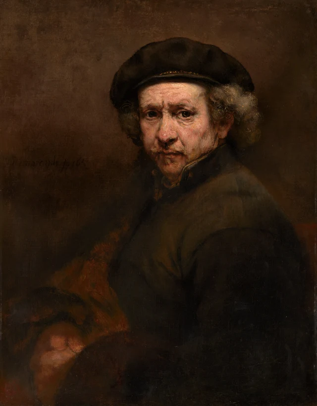
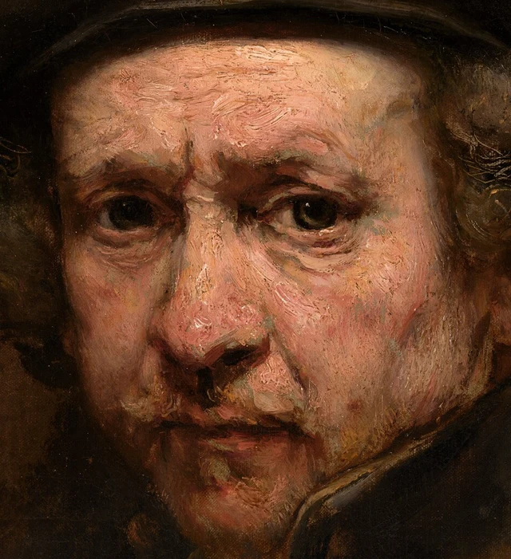
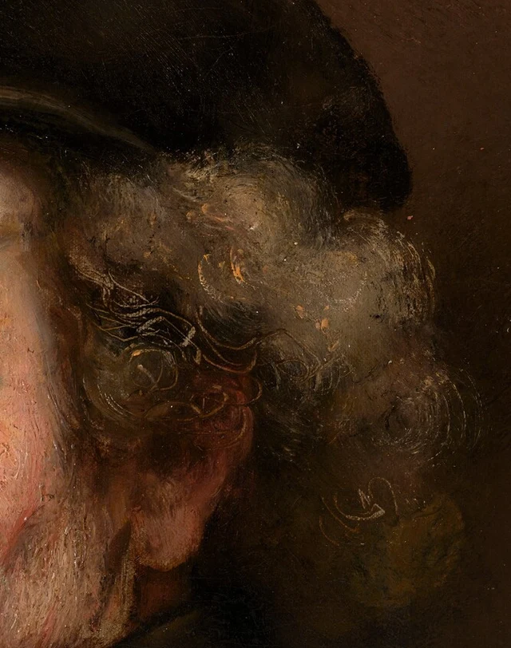
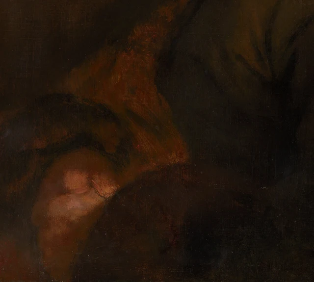

이마에 칠한 밝은 물감이 짧은 능선처럼 솟아 있다. 시선을 아래로 내려 눈가의 움푹한 부분에 이르면 색이 문득 차가워진다. 분홍빛 피부 사이에 회녹색이 남아 있다. 다시 양옆으로 눈을 돌리면 머리카락 속에서 가느다란 선들이 곱슬곱슬 말린다. 세 부분 모두 같은 사람의 머리를 그리고 있지만, 그리는 방법은 같지 않다. 어떤 곳에서는 물감을 더하고, 어떤 곳에서는 아래의 색이 드러나게 하며, 또 어떤 곳에서는 아직 젖어 있던 물감에 선을 긁어 넣었다.
이 차이들은 함께 볼 만하다. 얼굴이 생생하게 다가오는 것은 눈이 우리를 바라보기 때문만이 아니다. 표면을 만들어 낸 방식이 곳곳에서 달라지기 때문이기도 하다.

이 글은 이 그림의 힘이 서로 다른 몇 가지 물감의 상태가 함께 또렷하고 단단한 얼굴을 이루는 데 있다고 본다. 두껍게 칠한 곳, 얇게 칠한 곳, 긁어 낸 선은 하나의 균일한 피부로 매끈하게 정리되지 않았다. 각자의 모양을 유지하면서 얼굴, 머리카락, 옷깃, 어깨에 걸쳐 서로 호응한다. 우리는 한 사람을 알아보는 동시에, 그를 눈앞에 나타나게 하는 화가의 솜씨도 계속 보게 된다.
1659년 렘브란트는 쉰세 살이었고 암스테르담에 살고 있었다. 그는 이미 오랫동안 회화와 판화, 소묘로 자신의 모습을 거듭 표현해 왔다. 자화상은 생김새를 기록할 수도 있지만, 화가가 세상에 내보일 이미지를 만들고 이전 시대의 초상화와 대화할 수도 있다. 여기 보이는 모자와 돌아선 머리, 모은 두 손은 두 번째 맥락에서 이해할 필요가 있다. 우리를 바로 마주하는 듯한 이 모습 역시 구도와 전통을 통해 만들어졌다. 작품 연구
1 밝은 곳은 쌓아 올리고 어두운 곳은 남겨 두기
먼저 이마를 보자. 매끈한 연분홍색 한 면으로 이루어져 있지 않다. 모자 가장자리 가까이에서는 짧은 붓질이 가로로 놓이고, 미간으로 갈수록 자국이 기울고 휘기 시작한다. 화면 오른쪽에 조금 치우친 밝은 붓질 무리는 작은 소용돌이의 중심을 둘러싸며 퍼진다. 물감의 능선, 붓질 사이의 좁은 틈, 피부의 명암이 한데 모여 있다. 우리는 이마뼈를 따라 면이 돌아가는 모습과 실제 물감층의 높낮이를 동시에 본다.
이 두 가지 굴곡이 하나하나 일치하는 것은 아니다. 이마에서 솟아오른 물감의 능선이 모두 주름 하나를 그린 것이라고 볼 수는 없다. 어떤 자국은 밝은 면을 가로질러 빛을 넓게 펼친다. 반면 미간 가까이의 몇몇 짙은 선은 그곳의 오목함을 더한다. 모든 붓자국을 피부의 손상으로 읽으면, 그림을 그리는 움직임을 한 사람의 노화로 잘못 셈하게 된다.

코를 보면 이 그리기 방식이 더 잘 드러난다. 콧등의 좁은 밝은 색이 아래로 내려와 붉은 코끝에 닿는다. 화면 오른쪽의 밝은 색은 콧구멍 근처의 짙은 갈색과 바짝 붙어, 갑자기 코의 부피를 앞으로 밀어 낸다. 코끝의 둥근 모양을 보여 주는 데 완결된 윤곽선은 필요하지 않다. 몇 덩이의 색이 여기서 방향을 바꾸고 서로 맞닿아 버티면, 눈은 튀어나온 형태를 읽어 낸다.
뺨에서는 변화가 다르게 이어진다. 화면 오른쪽 뺨의 짧은 분홍색 붓질은 비스듬히 아래로 향하고, 구레나룻에 가까워지면서 차가운 회색이 섞인다. 턱선으로 갈수록 밝은 살색이 조금씩 갈색과 옷깃으로 이어진다. 코끝처럼 갑자기 앞으로 튀어나오는 대신, 면의 방향 전환이 더 길게 펼쳐진다. 같은 얼굴 안에 급격한 돌출과 천천히 뒤로 물러나는 면이 함께 있다. 붓질의 방향과 색이 급히 맞닿거나 서서히 이어지는 방식이 이러한 거리의 차이를 구별해 낸다.
미술관의 기법 조사에 따르면, 얼굴의 밝은 부분은 물감을 듬뿍 묻힌 짧은 붓질로 시작되었다. 몇몇 붓질은 젖은 물감 속에서 소용돌이치듯 맞물리며, 완전히 혼합되지는 않았다. 물감이 마른 뒤에는 서로 분리된 짧고 어두운 붓질이 더해졌다. 눈 주위의 회녹색에는 아래에 미리 칠해 둔 바탕색 층도 활용되었다. 따라서 이곳의 두께 차이에는 물질적 근거가 있다. 사진만 보고 짐작한 것은 아니다. 기법 요약과 연구 본문
그래서 움푹한 눈가가 더욱 흥미롭다. 화가는 물감을 더 칠해 어두운 곳을 채울 수도 있지만, 먼저 칠한 색이 계속 제 역할을 하도록 둘 수도 있다. 두껍게 칠한 이마와 뺨 사이에서 차가운 색은 한 걸음 뒤로 물러난 듯 보인다. 두 눈은 그 안에서 서로 다르게 드러난다. 화면 왼쪽 눈은 더 깊이 묻혀 있고, 오른쪽 눈은 아래 눈꺼풀이 더 밝다. 응축된 눈빛에는 양쪽의 이 같지 않은 명암도 작용한다.
입 주변에서는 이러한 움직임이 한층 조여 든다. 윗입술과 입꼬리가 한 줄기의 어두운 부분을 이루고, 그 아래에는 더 옅은 아랫입술, 다시 그 아래에는 작고 얼룩덜룩한 턱이 이어진다. 눈썹과 코, 입을 가는 선으로 가지런히 둘러싸지는 않았지만, 각각의 자리는 충분히 또렷하다. 화가는 변화가 풍부한 표면을 남기면서도 이목구비에 탄탄한 짜임을 부여했다. 두 가지가 동시에 존재하기에 이 얼굴은 단단하면서도 굳어 있지 않다.
2 머리카락 한 올을 물감 속에서 긁어 낼 수 있다
화면 오른쪽, 모자 가장자리 아래의 희끗한 머리카락에는 두 가지 크기의 표현이 있다. 먼저 커다란 회색 덩어리가 부풀어 오른 머리카락의 부피를 보여 준다. 그 덩어리의 안쪽과 가장자리에서는 가느다란 황갈색 선이 불규칙한 고리를 만들며 곱슬거린다. 어떤 선은 나란히 아래로 내려가고, 어떤 선은 갑자기 방향을 되돌린다. 몇 가닥은 더 어두운 곳까지 뻗어, 느슨하게 풀린 가느다란 용수철처럼 보인다.

기법 조사에서는 머리카락의 젖은 물감에 붓대 끝으로 긁어 넣은 선을 확인했으며, 가는 붓으로 그린 부분도 밝혔다. 이는 ‘머리카락 한 올을 그린다’는 것이 반드시 색을 묻힌 붓질 하나를 더한다는 뜻은 아님을 보여 준다. 이미 칠한 물감을 밀어 내거나 긁어 열어도 선이 나타날 수 있다. 기법 요약
이 선들은 이마의 두꺼운 붓질과 뚜렷이 다르다. 이마의 밝은 면에는 한 붓 한 붓 쌓아 올린 물감의 촘촘함이 있다. 반면 곱슬머리는 유연하고 성기다. 특히 귀 위에서는 선들이 서로 교차하고, 그 주변에는 낱낱의 머리카락으로 나누지 않은 넓은 회색 면이 남아 있다. 덕분에 머리카락은 풍성한 전체 모양을 지니면서도, 눈으로 따라갈 수 있도록 곱슬거리며 이어지는 몇 가닥의 선을 갖는다. 화가가 모든 머리카락을 한 올씩 빠짐없이 그릴 필요는 없다.
더 위로 올라가 모자를 보자. 넓고 어두운 모자의 전체 윤곽은 비교적 끊김 없이 이어지며, 가장자리의 짧은 한 부분에만 따뜻하게 빛나는 장식이 있다. 이마는 모자의 아래 가장자리에 닿고, 희끗한 머리카락은 양옆으로 퍼진다. 이렇게 모자의 커다란 어두운 면은 구도에서 구체적인 일을 맡는다. 잘게 움직이는 머리카락과 활발한 살색 곁에 안정된 이웃이 되어 주는 것이다. 이를 그저 ‘렘브란트의 명암법’이라고만 부르면, 크고 작은 형태, 촘촘하고 성긴 부분, 성격이 다른 선들이 어떻게 어울리는지 놓치게 된다.
모자 자체도 수정되었다. 미술관의 기록은 지금의 어두운 색 아래에 더 밝은 물감이 있음을 지적하며, 처음에는 모자 색을 더 밝게 구상했음을 보여 준다고 설명한다. 그러나 고쳐 그렸다는 사실을 안다고 해서 당시 화가의 이유를 모두 알 수 있는 것은 아니다. 지금 화면에서 판단할 수 있는 것은 이렇다. 현재의 어두운 모자는 머리 위쪽을 하나의 넓은 형태로 묶어, 그 아래 작고 밝은 변화들이 집중되게 한다.
3 이 얼굴에는 이 어깨가 필요하다
이 그림은 높이 84.5센티미터의 반신상이다. 얼굴 하나로만 기억하면 구도의 큰 부분을 잃게 된다. 얼굴은 위쪽에서 약간 오른편에 있고, 화면 오른쪽 어깨가 그리는 넓은 곡선이 그쪽을 차지한다. 손은 왼쪽 아래에 있어 얼굴과 멀리 떨어져 있다. 이 두 살색 사이를 밝은 길이 곧바로 이어 주지는 않는다. 시선은 넓은 갈색 옷을 가로질러야 한다.
옷깃은 턱 옆에서 방향을 바꾸어 화면 오른쪽 위로 올라간 다음 어깨에 이어진다. 이 좁고 밝은 가장자리는 이음매처럼 얼굴의 정교한 변화를 몸의 더 큰 형태에 연결한다. 어깨의 빛은 더 넓고 약하며, 그 아래 소매는 넓은 부분이 어두워진다. 이들은 머리가 놓일 자리를 마련하고 몸에 두께를 주면서도, 이목구비에서 주의를 빼앗지 않는다.

손은 크게 간추려 그렸다. 손등과 손가락이 맞닿은 곳, 소맷부리의 위치는 알아볼 수 있지만, 얼굴에서처럼 풍부한 붉은색과 회색, 분홍빛 도는 흰색을 하나하나 따라가기는 어렵다. 모은 두 손은 아래쪽 형태를 한데 거두고, 얼굴은 위쪽에서 펼쳐진다. 이 배분은 반신상에 분명한 무게중심을 준다. 아래에서는 안정시키고 위에서는 집중시키는 것이다. 이곳에서는 세부가 적은 것 자체가 역할을 하므로, 단순히 덜 완성된 것으로 볼 수 없다.
덜 눈에 띄는 효과가 하나 더 있다. 손에는 붓이나 팔레트가 들려 있지 않다. 직업을 나타내는 도구가 화가라는 정체를 곧바로 알려 주지 않는다. 우리는 한 남자가 어떻게 앉고 어떻게 고개를 돌리는지 보며, 동시에 이런 제시 방식이 어떤 초상화들과 통하는지도 살핀다.
내셔널 갤러리 오브 아트의 도록은 이 그림을 라파엘로의 《발다사레 카스틸리오네의 초상》과 연결한다. 렘브란트는 1639년 암스테르담에서 그 작품을 보고 스케치를 남겼다. 모은 두 손, 돌아선 몸, 관람자를 향한 머리, 모자로 머리를 감싼 구성은 비교의 구체적인 근거가 된다. 도록은 이 관계를 바탕으로 학식을 갖춘 화가로서의 자기 이미지를 논한다. 도록의 비교와 도판
이 연결을 알면 눈앞의 소박함은 더 복잡해진다. 넉넉한 옷과 절제된 색, 도구를 들지 않은 자세가 미술의 역사를 배제하는 것은 아니다. 전통은 돌아선 어깨의 각도에도, 두 손을 모은 위치에도 숨어 있을 수 있다. 렘브란트는 이 묵직한 구성을 빌리면서도 더 강한 명암 대비와 흔적을 또렷이 남기는 물감 처리로 자신의 모습으로 만든다. 초상화의 품위는 몸의 구성과 그것을 만들어 내는 기량 모두에서 나온다.
4 그림의 그림자도 시간을 거쳤다
여기까지 본 뒤에 생애를 이야기하면 더 정확해진다. 렘브란트는 경제적 위기 뒤에 집과 많은 재산을 잃었으며, 이 그림은 그와 관련된 경매가 끝난 뒤에 그려졌다. 이 사실은 독자를 이미 마련된 이야기로 쉽게 이끈다. 실의에 빠진 화가가 어두운 얼굴로 자신의 일생을 말한다는 이야기다. 그러나 오늘 보이는 색에는 또 다른 역사도 들어 있다. 완성 이후 이 그림에 무슨 일이 일어났는가 하는 역사다.
1992년의 보존 처리에서는 변색된 바니시와 후대에 덧칠한 물감 일부를 제거했다. 미술관의 연구는 오래된 바니시가 그림의 침울한 인상을 강화했음을 분명히 밝힌다. 세척 뒤에는 얼굴의 분홍색과 다른 살색들을 더 쉽게 구별할 수 있게 되었고, 몸통의 입체감도 선명해졌다. 과거에 개인적 비극의 직접적인 표현으로 여겼던 효과 중 일부는, 나중에 일어난 재료의 변화에서 비롯되기도 했다는 뜻이다. 복원과 해석의 역사
그렇다고 ‘슬픔’을 ‘기쁨’으로 바꿀 필요는 없다. 더 유익한 것은 색이 어떻게 작용하는지 구체적으로 보는 일이다. 코끝의 붉은색은 움푹한 눈가보다 따뜻하고, 이마의 밝은 색은 모자보다 밝다. 턱에서는 옷깃 가장자리를 따라 조금의 빛이 다시 드러난다. 이 색들은 얼굴에 굴곡과 색온도의 차이, 색채의 움직임을 준다. 침울하다는 전체적인 인상만 남기면, 이미 구별할 수 있는 이러한 차이를 납작하게 눌러 버리게 된다.
한편 오늘의 그림이 아무 손상 없이 1659년의 상태로 돌아온 것도 아니다. 기법 요약은 옷의 몸판과 화면 왼쪽 배경의 마모를 기록하고, 이전 복원에서 남긴 어두운 물감과 도막 일부가 아직 존재한다고 설명한다. 따라서 배경의 검게 변한 곳, 얼룩진 곳, 흐릿한 곳을 모두 곧바로 화가의 치밀한 배치라고 칭송해서는 안 된다. 모자와 얼굴, 어깨 사이의 큰 관계를 관찰하는 일은 각 부분의 보존 상태를 신중하게 판단하는 일과 함께할 수 있다.
내가 보기에 보존·복원의 역사가 주는 가장 중요한 교훈은 오히려 이 자화상을 더 자세히 볼 만한 작품으로 만든다. ‘렘브란트를 직접 본다’는 경험은 실제로 화가의 구성과 재료의 변화, 후대의 처리를 거쳐 온 것이다. 이들을 구별한다고 눈앞의 생생함이 줄어들지는 않는다. 오히려 더 구체적이 된다. 이마의 두꺼운 물감, 움푹한 눈가의 차가운 색, 곱슬머리를 이루는 긁은 선, 넓은 어깨가 한 사람을 화면에 나타나게 하는 일을 함께 맡고 있다. 그 어느 요소든 미리 써 놓은 비극보다 이 그림이 어떻게 성립하는지 더 잘 설명해 준다.
선택 읽기 SAE로 살펴보는 제작이 남긴 시간
아래에서는 SAE(Self-as-an-End)를 빌려 오늘날의 감상에 관한 질문을 던진다. 이를 근거로 화가의 이론적 의도나 인물의 내면을 추정하지는 않는다.
세척은 눈에 보이는 색을 바꾸었다. 세척에 대해 아는 것은 어떤 색을 누구의 작업으로, 어느 시기의 것으로 볼지도 바꾼다. 첫 번째 변화는 그림에서 일어났고, 두 번째 변화는 이 실물을 이해하는 우리의 방식에서 일어난다. SAE 미학 총론의 ‘맥락의 내재성’은 배경이 되는 맥락이 아름다움을 구성하는 데 참여한다고 주장한다. 이 생각으로 그림을 보면 이렇게 물을 수 있다. 얼굴의 명암을 감상할 때, 그 감상의 대상에는 이제 구별할 수 있게 된 재료의 층과 제작의 역사도 포함되어 있는가? SAE 미학 총론 제3절
움푹한 눈가의 회녹색은 구체적인 출발점이다. 여기에 바탕색 층을 활용했다는 사실을 알면 이해할 수 있는 관계가 하나 더 생긴다. 먼저 칠한 색이 나중에 더한 밝은 색들에 둘러싸인 채, 완성된 작품에서도 계속 그림자 역할을 하는 것이다. 그 색은 눈을 뒤로 물러나게 하며, ‘아래의 층을 남겨 두기’를 얼굴을 만드는 적극적인 방법으로 만든다. 이곳에서 지식은 우리가 눈여겨볼 수 있는 그리기 방식을 하나 더해 준다.
그림 3에 보이는 곱슬거리는 가는 선 몇 가닥을 천천히 따라가 볼 수도 있다. 선들이 어떻게 굽고 교차하며 회색 머리카락 덩어리로 들어가는지 살펴보자. 그런 다음 미술관이 확인한 젖은 물감층에 선을 긁어 넣는 기법을 바탕으로 다시 묻는다. 당시 표면의 물감이 이미 말라 굳었다면, 같은 방식으로 선을 긁었을 때 이런 종류의 흔적이 생겼을까? 질문은 눈에 보이는 선에서 연구로 뒷받침된 작업 행위로 옮겨 간다. 여기서 SAE의 인과적 관점은 형태가 그 동작이 일어난 순간의 재료 상태에 어떻게 의존하는지 묻는 데 도움을 준다. 인과의 아름다움
이마는 또 다른 관계를 보여 준다. 두꺼운 붓질들은 젖은 상태에서 맞닿았고, 나중에 더한 어두운 색은 이미 마른 층 위에 놓였다. 이제 그 선후의 시간들이 하나의 표면에 동시에 나타난다. 눈가와 머리카락을 함께 비교하면, 앞선 작업이 계속 작용하게 하는 여러 방법을 알게 된다. 남겨 두기, 덧쌓기, 긁어 열기다. 이것들은 제작의 기록만 남기는 것이 아니라, 각각 지금 보이는 얼굴의 명암과 형태에도 참여한다. 곱슬머리 한 가닥은 그려진 머리에 속하면서, 실제로 만들어진 그림에도 속한다. 두 가지 보는 방식이 같은 선 하나에서 만난다.
이미지와 자료 안내
눈으로 관찰한 내용은 내셔널 갤러리 오브 아트가 제공하는 3202 × 4096픽셀 이미지와 세 개의 세부 이미지를 바탕으로 했다. 전체 이미지는 내려받은 파일을 그대로 유지했다. 세부 이미지는 잘라 낸 픽셀을 PNG로 무손실 저장하고 원본의 ICC 색상 프로파일도 보존했다. 색 보정, 선명도 조정, 복원, 생성 콘텐츠의 추가는 하지 않았다. 다만 화면의 색 표현과 확대 비율은 여전히 감상에 영향을 미친다.
이미지에는 미술관의 CC0 오픈 액세스 정책이 적용된다. 이 글의 세부 감상과 현대 이론을 적용한 시도는 독립적으로 작성되었으며, 제작과 복원에 관한 사실은 링크한 미술관 연구에 근거한다. 이미지의 개방 이용 허락이 연구 본문의 개방 이용 허락까지 뜻하지는 않는다. 본문에서 언급한 라파엘로 작품은 연구 링크만 제공하며, 비교 사진은 이 묶음에 포함하지 않았다. 참고 자료와 이미지 출처도 참조하기 바란다.